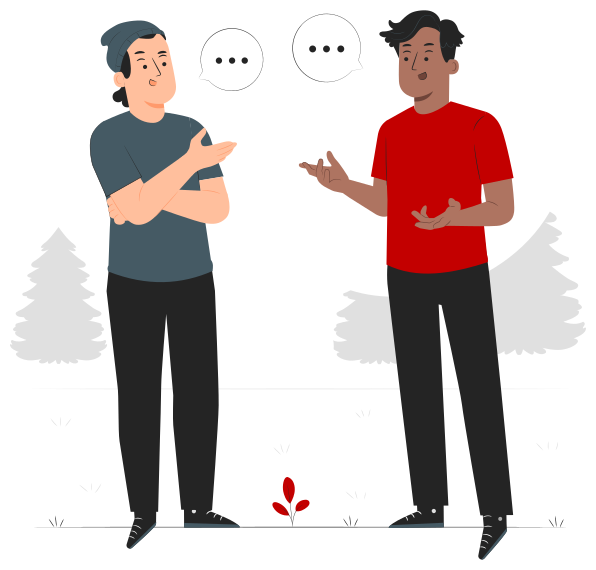

Módulo 5 · Situações Sensíveis
Apoio a sócio ou adepto em sofrimento
Um sócio, adepto ou visitante em sofrimento emocional pode apresentar maior sensibilidade, reatividade ou dificuldade em comunicar necessidades de forma organizada. Isto pode acontecer à porta do Estádio, na bilheteira, na loja, no Museu ou ao telefone, e em dia de jogo a emoção do resultado pode amplificar o que a pessoa já traz consigo. O objetivo não é fazer psicoterapia, mas oferecer uma resposta humana, segura e empática dentro do papel profissional.
O que pode estar a acontecer?
Situações emocionalmente exigentes
O sócio, adepto ou visitante pode estar a viver situações pessoais ou profissionais emocionalmente exigentes, podendo apresentar:
- hipersensibilidade emocional
- ansiedade, tristeza ou desespero
- irritabilidade ou zanga
- frustração com o serviço (bilhetes, quotas, filas, acessos)
- respostas emocionais intensas
- necessidade de ser ouvido, compreendido e validado

O que fazer?
O que fazer?
- 1Demonstrar disponibilidade: Escutar de forma ativa e respeitosa, mostrando interesse genuíno pelo que a pessoa está a comunicar.
- 2Manter uma postura calma e empática: Falar de forma tranquila, previsível e não defensiva.
- 3Validar o sofrimento: Reconhecer que a experiência da pessoa pode ser difícil ou emocionalmente intensa. “Percebo que esta situação esteja a ser muito difícil para si.”
- 4Clarificar necessidades: Utilizar perguntas abertas e não intrusivas para perceber o que aconteceu, o que a pessoa precisa, como pode ser ajudado naquele momento.
- 5Ajudar na resolução de problemas: Sempre que possível, identificar soluções práticas, clarificar próximos passos, reduzir incerteza.
- 6Gerir expectativas: Ser transparente e realista e evitar prometer aquilo que não pode garantir.
- 7Utilizar estratégias de estabilização: Se a pessoa estiver muito desregulada: incentivar respiração lenta, utilizar grounding, ajudar a recentrar atenção no presente.
O que evitar?
O que evitar?
- Tentar “resolver” imediatamente o sofrimento: A pressão para fazer a pessoa sentir-se melhor rapidamente pode reduzir capacidade de escuta genuína.
- Invalidar ou minimizar: Evitar frases como “Isso não é assim tão grave”, “Tem de ter calma”.
- Atribuir culpa: Não insinuar que o sofrimento da pessoa é “culpa dela”.
- Julgar ou rotular: Focar-se na necessidade e sofrimento da pessoa, e não no que “há de errado” com ela.
- Entrar em confronto defensivo: Evitar responder à emoção com irritação, sarcasmo ou rigidez excessiva.
Encaminhamento urgente
Quando realizar encaminhamento urgente?
Se existir:
- !ideação ou intenção suicida
- !comportamento autolesivo
- !risco grave para a segurança da pessoa ou de terceiros
Nestes casos
Pedir apoio imediato e contactar serviços de emergência:
- Linha de Emergência Nacional112
- Linha Nacional de Prevenção do Suicídio1411
- SNS 24 · Aconselhamento Psicológico808 24 24 24